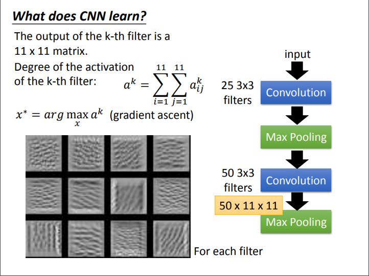
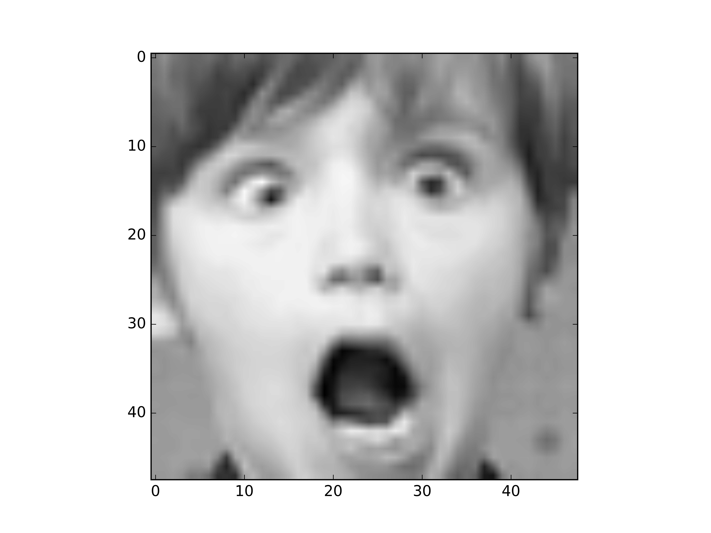

# Problem 5: Analyze the Model by Visualizing Filters
Problem Description:
* use **Gradient Ascent** method mentioned in class to find the image that activates the selected filter the most and plot them (start from white noise).
* Feed an image in your validation set to the model, and plot the output of that filter
* Describe what you observed, and explain it
Hint:
* you can use other model with poor performance to see what is the difference
* you can also try to find which image will activate the specific class the most
* you can start from natural image (not white noise), and try to create the <a href="https://arxiv.org/pdf/1412.6572.pdf" target="_blank">**adversial image**</a>
## Lecture

## 範例
* **[Note] 請不要直接使用助教的圖來當成作業交上來**
* **[Note] 請不要使用這張範例圖**

* **[Note] colormap 請不要使用 Purples**
<img src="http://i.imgur.com/HdQ9oQU.png" alt="Drawing" style="width: 1300px;"/>
<img src="http://i.imgur.com/xEvPeW8.png" alt="Drawing" style="width: 1300px;"/>
## Reference
→ [Visualize your convolution neural network](https://blog.keras.io/how-convolutional-neural-networks-see-the-world.html)